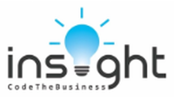

01
교육·심화 세션
기초 과정에서는 Python·Pandas, 데이터 전처리와 EDA·시각화, 통계와 회귀·분류를 학습합니다. 공개된 심화 과정은 딥러닝·언어모델·추천시스템·시계열 등을 팀별로 탐구하고 발표하는 방식입니다.

INSIGHT는 2019년에 설립된 서강대학교 경영데이터사이언스 학회입니다. 데이터와 인공지능을 활용해 비즈니스 문제를 분석하고, 분석 결과를 의사결정과 경영 전략으로 연결하는 것을 목표로 합니다.
교육 세션에서 Python·통계·데이터 분석의 기초를 다진 뒤, 심화 세션과 인사이콘에서 주제를 깊이 탐구하고 프로젝트에 적용합니다. 학회원이 직접 정한 주제나 공모전 과제를 다루며 분석의 근거와 비즈니스 인사이트를 설명하는 경험을 쌓습니다.
자율 스터디와 산학협력뿐 아니라 현직자 데이·홈커밍 데이로 학계와 현업의 알럼나이를 만납니다. 공개된 프로젝트에는 다국어 금융 서식 지원 챗봇과 학습 경험을 연결하는 AI 지식 그래프 등 데이터·AI를 실제 활용 문제에 적용한 사례가 소개돼 있습니다.
기초 과정에서는 Python·Pandas, 데이터 전처리와 EDA·시각화, 통계와 회귀·분류를 학습합니다. 공개된 심화 과정은 딥러닝·언어모델·추천시스템·시계열 등을 팀별로 탐구하고 발표하는 방식입니다.
학회 내 데이터 경진대회로, 배운 내용을 실제 프로젝트에 적용합니다. 1차에서는 공통 비즈니스 문제를 분석하고, 2차에서는 직접 발제한 프로젝트나 공모전 과제를 선택해 팀으로 진행합니다.
학기와 방학에 관심 주제로 팀을 구성해 공부합니다. 크롤링·통계·경영·금융 데이터·LLM과 Python·Git 보충 학습, 데이터 관련 자격증 준비 등의 활동 사례가 있습니다.
기업 산학협력과 ITDA 연합 학술제에서 실제 과제를 탐구하고 결과를 공유합니다. 현직자 데이와 홈커밍 데이에는 현업이나 대학원에서 활동하는 알럼나이를 초청해 경험을 나눕니다.
2026년 2학기 모집 공고는 전공과 관계없이 연속 두 학기 활동과 정규 세션 참여가 가능한 서강대학교 학생을 대상으로 안내했습니다. 차기 모집 일정과 참여 조건은 새 공식 공고에서 확인할 수 있습니다.